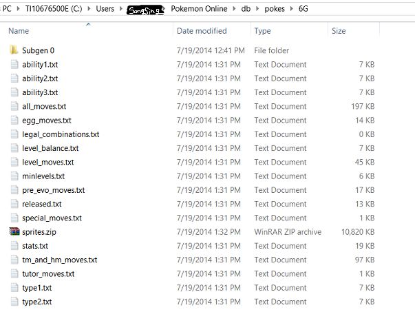
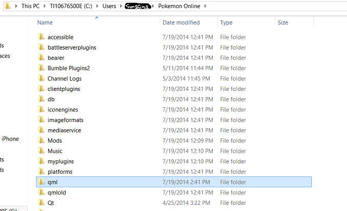
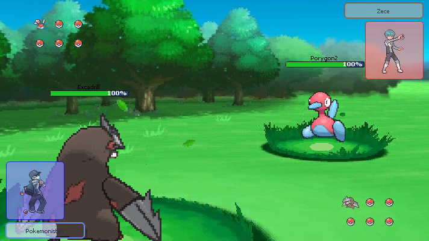

pokemon onliner
pokemon online is definitely a thing......... can download here
Sprites > Models
if you'd like to use gen 6 sprites from the Smogon Sprite Project on PO, follow the step blow:- Intal pokemon onlin from link from earlier
- Downlaod this zip of smogon sprites
- Go to your po folder, then go to db, then go to pokes, then go to 6G
 - Replace the sprites.zip in that folder with the sprites.zip you downloaded
- If you use new battle window, uncheck Battle Options→New Battle Wdinow→use 3d model
- now it works ur welcome
These are 3D models if you wanna switch back or somethin
Client Scripts
My client scripts ar ethe best they ahve more features than any other client script probably and raducan uses them so i mean tat's enough for you righ thrego ehre to learn or just download
New Battle Window
I'm building a custom new battle window tell me if its good and leave suggestion and things to me on po forum or wahteverMAKE SURE YOU'RE USING 16:9 OR IT WILL LOOK WEEIRDD
How to install:
- Download the battle window you want, mine or PO's (if you want to switch back or seomthin idk) below
- Rename/delete the "qml" folder in your po folder, and extract the downloaded zip to where it used to be
 - Restart PO if it's open
- Enjoy ! #!@ !! :)
Download links: Download new / Download what PO uses
Preview:
